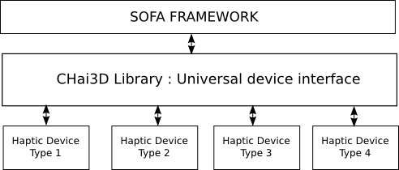
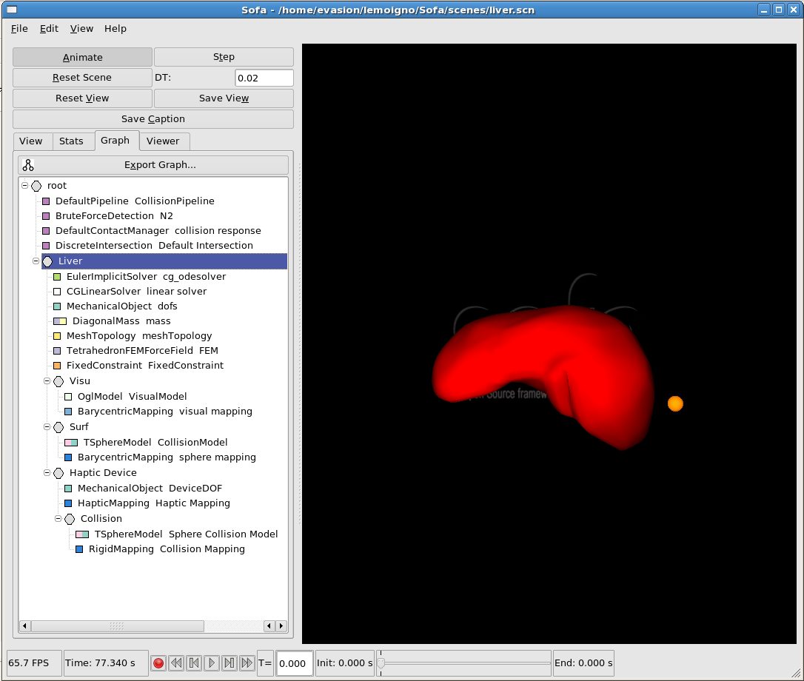
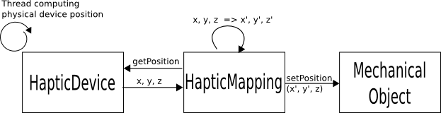
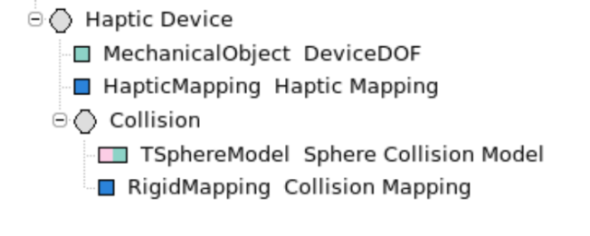

Abstract
This
HOW-TO is targeted to the SOFA user who wants to use an haptic device
in SOFA scenes. You need to have some experiences with SOFA. This
document contains some pre-requisite to run the code, an explanation of
how it works and, finaly, some code examples to integrate the Haptic
Device in your own scenes.
Pre-requisite / First launch
This SOFA module use the
Chai3D library to abstract haptic devices low-level interface.

For
the moment, only SensAble PHANToM device have been tested, with the
SensAble OpenHaptics toolkit. But we expect that all Chai3D compatible
device works with our implementaton.
So
let's start. You
need to install the device driver and the openhaptis toolkit. Run the test and some example to be sure all is OK.
for linux user, be sure that openhaptics library (HD, HDU, HL, HLU) are installed in /usr/lib directory
for windows user, be sure that the 3DTOUCH_BASE environment variable is created and specify your openhaptic home dir.
Next,
you need to download the chai3d_dependencies.zip file from the
"Fichiers" tab of the Sofa Dev Gforge page and uncompress it in your
Sofa root directory.
It copy several files :
extlibs/CHAI3D
-- contains all the Chai3D
include file
bin/phantomHD.dll
--
chai3D needs this dll to initialize the phantom
lib/linux/libchai3d_linux.a
-- pre-compiled
version of chai3D library for linux
lib/win32/Common/chai3d_complete.lib -- pre-compiled version of chai3D library for windows
lib/win32/Common/chai3d_completed.lib -- pre-compiled debug version of chai3D library for windows
If you use other device, recompile chai3D and replace the
folowing files :
- $SOFA_DIR$/lib/linux/libchai3d_linux.a for linux
- $SOFA_DIR$/lib/win32/Common/chai3d_complete.lib for windows
Move into the SOFA directory and copy
sofa-default.cfg in
sofa-local.cfg. Open
sofa-local.cfg and uncomment the line:
DEFINES += SOFA_HAVE_CHAI3DExecute
qmake and compile SOFA. A new executable named Haptic has been built
in the
bin directory. Run it and open the liver-haptic.scn scene
in the scenes directory.
Launch
the animation and start playing with the liver. You should see this
interface with a little yellow ball following your device moves:

How it works
There are two main classes :
HapticDevice and
HapticMapping.
HapticDevice is used as a link between Chai3D and SOFA. It contains a reference to the device and the haptic loop.
HapticMapping is a specialized
RigidRigidMapping.
In fact, whereas a classic mapping takes two SOFA objects as input
and output models, the HapticMapping only takes an output model and
replaces the input by a
HapticDevice object.

At every step of the simulation, the
apply() method of each mapping is called. In our HapticMapping, the
apply()
method gets the real device position, converts it into the SOFA scene
axes * and gives this new position to the output SOFA object. So if we
use a rigid mechanical object as output of the HapticMapping,
this object follows the position of the physical haptic device.
*
In fact, we want that the sofa object representing the
device moves in a special coordinate system fixed in front of
the camera. The rotation and translation of the SOFA simulation
scene modifies the device position for the user.
Code Examples
You
have two ways to integrate the HapticMapping in your scene graph. You
can insert it directly in your scene xml file, or you can launch a
scene and add the haptic node dynamicaly.
External add
Here
is an example of a graph that you can add in every scene to add a
little collision sphere following your device moves:

Explanations :The Mechanical Object contains a moving frame representing the device.
The HapticMapping maps the mechanical object above from the HapticDevice (hidden for the SOFA graph scene)
The collision model of the device is a simple small sphere.
The
collision mapping links the sphere collision model to the moving frame.
Note that you can you use any other CollisionModel to represent the
shape of the device.
the complete code of this scene graph part can be found in scenes/addHaptic.xmlWith
this scene graph, at every simulation step, the
mechanical object takes the position of the device, and the sphere
collision model follows it thanks to the collision mapping.
In theory, you can connect what you want with the HapticMapping. The only restrictions are :
- The HapticMapping must have a MechanicalObject<Rigid3*Types> (Rigid3dTypes or Rigid3fTypes) sibling.
- The Haptic Device node must be under a solver.
Warning : You need to start the animation to see the visual model of the sphere.
Xml Scene add
Let's see how the HapticMapping is included in a scene file :
<Object type="HapticMapping" template="Rigid3dTypes">
<Attribute type="name">
<Data value="Haptic Mapping"/>
</Attribute>
<Attribute type="openGlInitialized">
<Data value="1"/>
</Attribute>
</Object>
The two important elements are :
- The template of the SOFA output model : can be Rigid3dTypes or Rigid3fTypes
-
The boolean data openGlInitialized. By default, it's false and it
change to true when openGl is initialized. If we add the node after
loading a scene, openGL is already initialized and we have to specify
the true (1) value. In summary, if you launch a scene wich contains a
haptic device at the begining, you can omit or put this value to false.
If you use a part of scene graph that you load after the scene, you
need to put this value to true (as in the addHaptics.xml example).
Future Works
The
next step is to compute feedback to feel as best as possible the
collision under the device and all the SOFA objects of the scene.
Fix this bug : Chai3D can't initialize twice a scene with an haptic device.